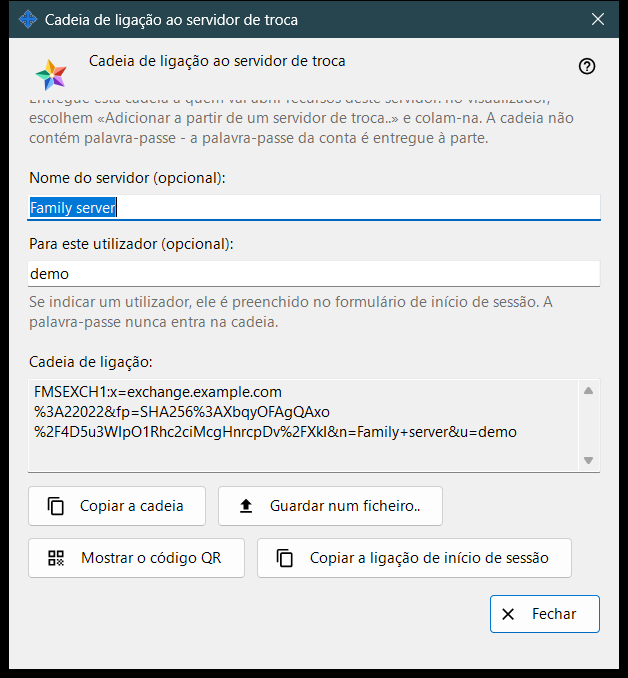
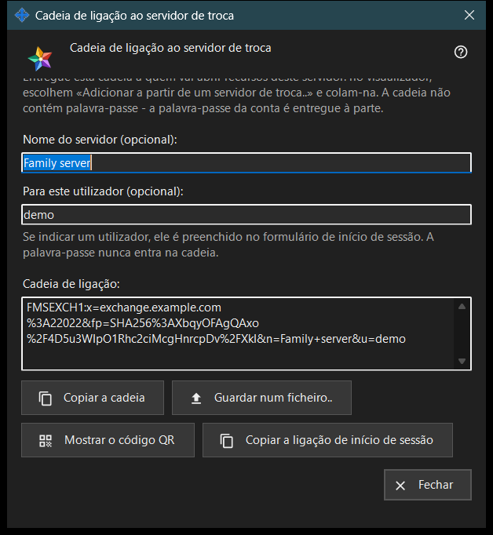

String de conexão ao servidor de troca
Finalidade
Esta janela cria a string de conexão que os outros dispositivos usam para encontrar este servidor de troca e verificar o seu certificado. A janela se abre com «String de conexão e código QR..» nas configurações do servidor de troca ou na mensagem de boas-vindas do servidor na primeira inicialização. A janela não altera nenhuma configuração.


Nesta ordem
- Certifique-se de que o servidor tem um certificado e de que o endereço para os clientes está definido.
- Abra a janela: a string aparece logo.
- Se quiser, digite o nome de um servidor e um nome de usuário; a string é recriada um instante depois de parar de digitar.
- Copie a string, salve-a em um arquivo, mostre o respectivo código QR ou copie o link de login.
- Entregue o resultado à outra pessoa e transmita a senha da conta em separado.
- Pressione «Fechar».
Os elementos
Quando o botão fica ativo
O botão «String de conexão e código QR..» só fica ativo quando o servidor tem um certificado e o endereço para os clientes está definido. Com o endereço vazio, o botão fica desativado e a indicação abaixo diz «Defina primeiro o endereço para os clientes: sem ele não é possível criar a string de conexão.» Dentro da janela, os botões ficam desativados enquanto não houver string.
Nome do servidor e usuário
«Nome do servidor (opcional):» aceita até 64 caracteres e é salvo na string como o nome do servidor. «Para este usuário (opcional):» aceita 3 a 64 caracteres (a-z, 0-9, ponto, sublinhado, hífen) e é preenchido no formulário de login do dispositivo que usa a string. Uma senha nunca entra na string.
String de conexão
A caixa somente leitura «String de conexão:» mostra o resultado: o endereço para os clientes, a impressão digital do certificado e o nome e o usuário opcionais. O dispositivo que recebe a string confia na impressão digital que ela contém, por isso ninguém precisa compará-la à mão.
Copiar e salvar
«Copiar a string» a coloca na área de transferência como texto normal, porque não é um segredo, e a linha abaixo diz «A string foi copiada.» «Salvar em um arquivo..» escreve um arquivo de texto .fmsexch (nome sugerido exchange-server.fmsexch) e mostra o respectivo caminho; o outro dispositivo o lê com «Abrir arquivo..» na sua janela da conta de troca. Se a área de transferência estiver ocupada ou não for possível escrever o arquivo, uma linha informa isso.
Código QR e link de login
«Mostrar o código QR» abre uma imagem da mesma string para escanear; indica um servidor e não dá acesso a nada. «Copiar o link de login» só aparece quando este servidor disponibiliza um cliente web; copia um link para o navegador que contém a mesma string.
Se a string não puder ser criada
Uma linha na cor de aviso indica a causa: o nome ou o usuário está fora dos limites; o servidor não tem certificado (inicie o servidor uma vez); ou o servidor de troca não respondeu. Corrija a causa e a string é recriada. «Fechar» encerra a janela; o nome e o usuário não são salvos.
Configurações do gerenciador · Configurações de compartilhamento SFTP · Configurações do servidor de troca